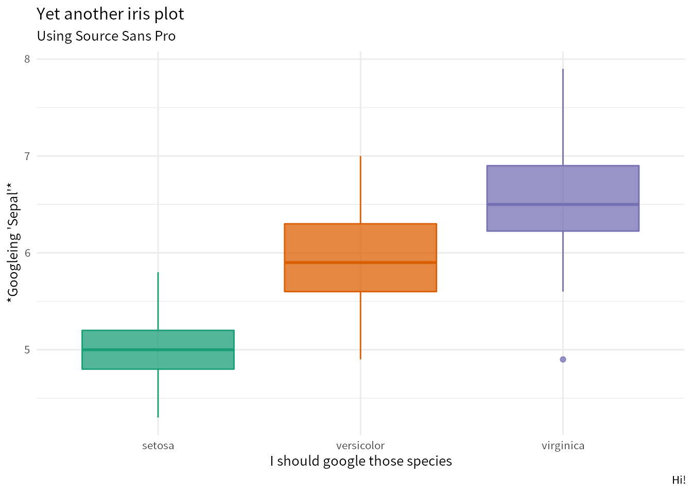

Chapter 4 Methods
4.1 Plotting
With FONTS!
## Registering fonts with R## Warning in kable_markdown(x, padding = padding, ...): The table should have a
## header (column names)|| || || ||
library(ggplot2)
p <- ggplot(iris, aes(x = Species, y = Sepal.Length, color = Species, fill = Species)) +
geom_boxplot(alpha = .75, show.legend = FALSE) +
scale_color_brewer(palette = "Dark2", aesthetics = c("color", "fill")) +
labs(
title = "Yet another iris plot",
x = "I should google those species",
y = "*Googleing 'Sepal'*",
caption = "Hi!"
)
p + theme_minimal() +
labs(subtitle = "Whatever this default font is")Figure 4.1: A plot.

Figure 4.2: A plot.
Figure 4.3: A plot.
## NOTE: Either Arial Narrow or Roboto Condensed fonts are required to use these themes.## Please use hrbrthemes::import_roboto_condensed() to install Roboto Condensed and## if Arial Narrow is not on your system, please see https://bit.ly/arialnarrowFigure 4.4: A plot.
4.2 Math
Using one dollar sign: \(\beta = (X^T X)^{-1} X^T Y\)
Display style with two dollar signs:
\[\beta = (X^T X)^{-1} X^T Y\]
4.2.1 Using environments
Below should be a set of equations using an align environment. If not, I still don’t understand MathJax.
equation from bookdown book: